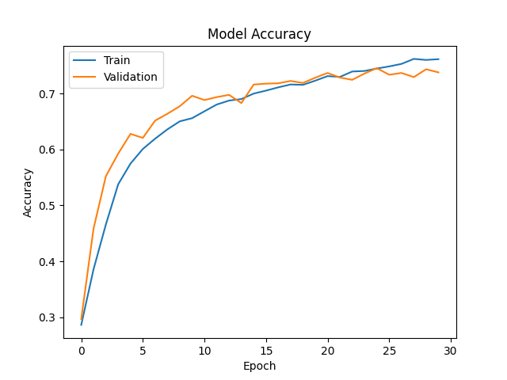
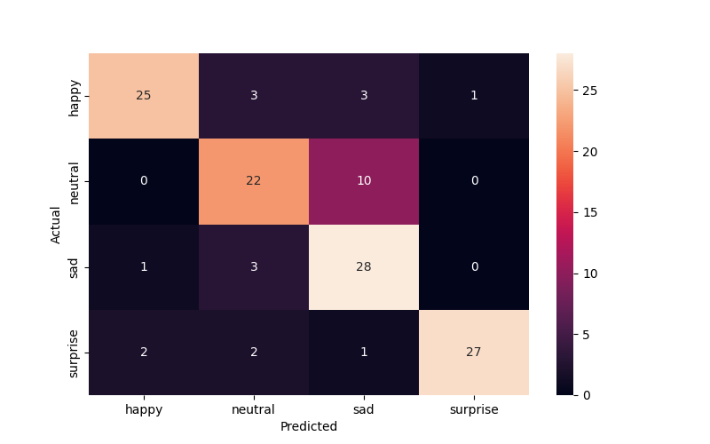
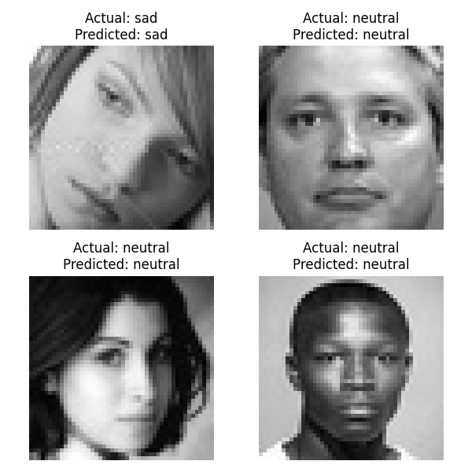

        <html>
        <head><title>Model Summary - 2024-03-03 17:48:38</title></head>
        <body>
        <h1>Model Summary</h1>
        <pre>Model: "sequential"
_________________________________________________________________
 Layer (type)                Output Shape              Param #   
=================================================================
 conv2d (Conv2D)             (None, 48, 48, 256)       6656      
                                                                 
 max_pooling2d (MaxPooling2  (None, 24, 24, 256)       0         
 D)                                                              
                                                                 
 dropout (Dropout)           (None, 24, 24, 256)       0         
                                                                 
 conv2d_1 (Conv2D)           (None, 24, 24, 128)       819328    
                                                                 
 max_pooling2d_1 (MaxPoolin  (None, 12, 12, 128)       0         
 g2D)                                                            
                                                                 
 dropout_1 (Dropout)         (None, 12, 12, 128)       0         
                                                                 
 conv2d_2 (Conv2D)           (None, 12, 12, 64)        73792     
                                                                 
 max_pooling2d_2 (MaxPoolin  (None, 6, 6, 64)          0         
 g2D)                                                            
                                                                 
 dropout_2 (Dropout)         (None, 6, 6, 64)          0         
                                                                 
 conv2d_3 (Conv2D)           (None, 6, 6, 32)          18464     
                                                                 
 max_pooling2d_3 (MaxPoolin  (None, 3, 3, 32)          0         
 g2D)                                                            
                                                                 
 dropout_3 (Dropout)         (None, 3, 3, 32)          0         
                                                                 
 flatten (Flatten)           (None, 288)               0         
                                                                 
 dense (Dense)               (None, 64)                18496     
                                                                 
 dense_1 (Dense)             (None, 32)                2080      
                                                                 
 dense_2 (Dense)             (None, 4)                 132       
                                                                 
=================================================================
Total params: 938948 (3.58 MB)
Trainable params: 938948 (3.58 MB)
Non-trainable params: 0 (0.00 Byte)
_________________________________________________________________
</pre>
        <h2>Test Accuracy</h2>
        <p>
1/4 [======>.......................] - ETA: 0s - loss: 0.4259 - accuracy: 0.8438
4/4 [==============================] - 0s 3ms/step - loss: 0.5633 - accuracy: 0.7969
</p>
        <h2>Accuracy Plot</h2>
        
        <h2>Classification Report</h2>
        <pre>              precision    recall  f1-score   support

       happy       0.89      0.78      0.83        32
     neutral       0.73      0.69      0.71        32
         sad       0.67      0.88      0.76        32
    surprise       0.96      0.84      0.90        32

    accuracy                           0.80       128
   macro avg       0.81      0.80      0.80       128
weighted avg       0.81      0.80      0.80       128

</pre>
        <h2>History</h2>
        <pre>Epoch 1: loss: 1.3774, accuracy: 0.2863, val_loss: 1.3372, val_accuracy: 0.2966
Epoch 2: loss: 1.2607, accuracy: 0.3858, val_loss: 1.1972, val_accuracy: 0.4585
Epoch 3: loss: 1.1528, accuracy: 0.4658, val_loss: 1.0492, val_accuracy: 0.5521
Epoch 4: loss: 1.0502, accuracy: 0.5377, val_loss: 0.9483, val_accuracy: 0.5925
Epoch 5: loss: 0.9729, accuracy: 0.5748, val_loss: 0.8862, val_accuracy: 0.6279
Epoch 6: loss: 0.9207, accuracy: 0.6008, val_loss: 0.8757, val_accuracy: 0.6207
Epoch 7: loss: 0.8851, accuracy: 0.6193, val_loss: 0.8246, val_accuracy: 0.6516
Epoch 8: loss: 0.8522, accuracy: 0.6360, val_loss: 0.7905, val_accuracy: 0.6639
Epoch 9: loss: 0.8233, accuracy: 0.6503, val_loss: 0.7864, val_accuracy: 0.6773
Epoch 10: loss: 0.7992, accuracy: 0.6559, val_loss: 0.7465, val_accuracy: 0.6960
Epoch 11: loss: 0.7833, accuracy: 0.6682, val_loss: 0.7513, val_accuracy: 0.6884
Epoch 12: loss: 0.7638, accuracy: 0.6803, val_loss: 0.7418, val_accuracy: 0.6936
Epoch 13: loss: 0.7487, accuracy: 0.6874, val_loss: 0.7359, val_accuracy: 0.6976
Epoch 14: loss: 0.7347, accuracy: 0.6901, val_loss: 0.7511, val_accuracy: 0.6829
Epoch 15: loss: 0.7213, accuracy: 0.6999, val_loss: 0.6907, val_accuracy: 0.7161
Epoch 16: loss: 0.7090, accuracy: 0.7052, val_loss: 0.6893, val_accuracy: 0.7177
Epoch 17: loss: 0.6997, accuracy: 0.7111, val_loss: 0.6994, val_accuracy: 0.7183
Epoch 18: loss: 0.6911, accuracy: 0.7162, val_loss: 0.6857, val_accuracy: 0.7225
Epoch 19: loss: 0.6812, accuracy: 0.7155, val_loss: 0.6916, val_accuracy: 0.7189
Epoch 20: loss: 0.6612, accuracy: 0.7230, val_loss: 0.6761, val_accuracy: 0.7284
Epoch 21: loss: 0.6557, accuracy: 0.7312, val_loss: 0.6591, val_accuracy: 0.7368
Epoch 22: loss: 0.6479, accuracy: 0.7297, val_loss: 0.6671, val_accuracy: 0.7286
Epoch 23: loss: 0.6303, accuracy: 0.7394, val_loss: 0.6734, val_accuracy: 0.7245
Epoch 24: loss: 0.6248, accuracy: 0.7404, val_loss: 0.6645, val_accuracy: 0.7358
Epoch 25: loss: 0.6240, accuracy: 0.7447, val_loss: 0.6626, val_accuracy: 0.7454
Epoch 26: loss: 0.6086, accuracy: 0.7485, val_loss: 0.6544, val_accuracy: 0.7336
Epoch 27: loss: 0.5943, accuracy: 0.7530, val_loss: 0.6625, val_accuracy: 0.7368
Epoch 28: loss: 0.5873, accuracy: 0.7619, val_loss: 0.6788, val_accuracy: 0.7294
Epoch 29: loss: 0.5879, accuracy: 0.7601, val_loss: 0.6537, val_accuracy: 0.7434
Epoch 30: loss: 0.5785, accuracy: 0.7615, val_loss: 0.6612, val_accuracy: 0.7378
</pre>
        <h2>Confusion Matrix</h2>
        
        <h2>Predicted Images</h2>
        
        </body>
        </html>
        